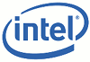
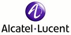
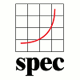
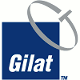
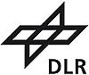

Researchers use the Oversim P2P Simulator (www.oversim.org) on top of OMNEST at Qualcomm to simulate various network scenarios.
Mellanox Technologies, the leading provider of Infiniband technology, uses OMNEST in their research. They have released their own Infiniband model for OMNEST/OMNeT++ users. The model can be downloaded from our community site, here.

Intel Corporation uses OMNEST™ simulation technology in its research.

IBM has chosen to deploy OMNEST™ at its Zurich Research Laboratory. Read the press release.
Cisco engineers needed a flexible solution that would allow them to accurately model the insides of future products without the restrictions imposed by some of the competing simulation systems. They chose OMNEST because the open architecture allows them to model exactly what they want, and how they want, to a level of arbitrary detail they feel fits the project goals.
Hewlett-Packard Development Company. HP professionals use OMNEST™ for performance simulation of hardware architectures in their research and development.
Orange / France Telecom use OMNEST™ to simulate optical networks in their research laboratory.

Alcatel-Lucent: When Alcatel and Lucent merged, both companies carried with them their own OMNEST™ installations, since both companies were already established OMNEST™ users. The combined entity continues to use the system on a regular basis in their research.

European Aeronautic Defence and Space Company.
EADS professionals use and embed OMNEST™ technology to simulate the internals of vehicle systems.
Thales Communications uses OMNEST™ in its research facilities worldwide. You can find related information on our network simulation references and case studies pages.

The Standard Performance Evaluation Corporation (SPEC) announced SPEC CPU2006, its next-generation benchmark for CPU-intensive performance. SPEC CINT2006 is the successor to CPU2000. OMNeT++ simulation is one of the 12 integer benchmarks, out of the total 29 benchmarks.


MEGA Corporation has chosen to embed OMNEST™ simulation technology in its MEGA Process product. MEGA Process 6.1 runs on the OMNEST™ simulation kernel. Read the press release.
Crédit Lyonnais selected MEGA
to map and simulate its customer processes. The results of the simulation are used to manage activities
with a view to improving the company's performance and customer satisfaction.
Read the success story.
